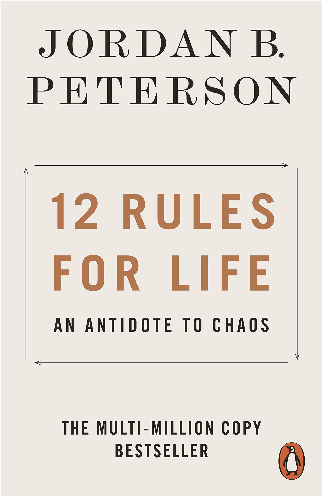

Talks about how marginal gains (even 1%) lead to massive outcomes when compounded together. It also talks about the importance of identity, how we perceive ourselves determines the kind of people we will become.
Honestly, every person should read this book. It talks about the many human fallacies that exist (where humans think incorrectly). Each fallacy is its own story making it great for people who have short attention spans. Amazing ideas that can be pulled as abstractly as you want. If you're smart you'll read every book more than once but esspetally this one.

Besides having the word "number" in the title this is not a math book. She talks about the many things she learned from math illiterate to PHD. This book has changed my life. "what one fool can do another can - Richard P. Feynman."
It's a very fun title, with some great applications. Rule 9 is to assume the person you are speaking to might know something you don't, my personal favorite application. If your uninterested in reading the full book with all of its examples I recommend you watching his YouTube video. its filled with a base understanding of all his rules.

A lot of people say this book is overrated and it might be but there is still some applications that people think too simplistic of. One of the best advices you will ever hear is the backwards law: Accepting negative experiences is itself a positive. Therefore pray that your life is filled with struggles and let those problems gnaw away at you, because you'll become the best version of yourself. Nothing easy is ever worth it. (I recommend reading the first half of the book)